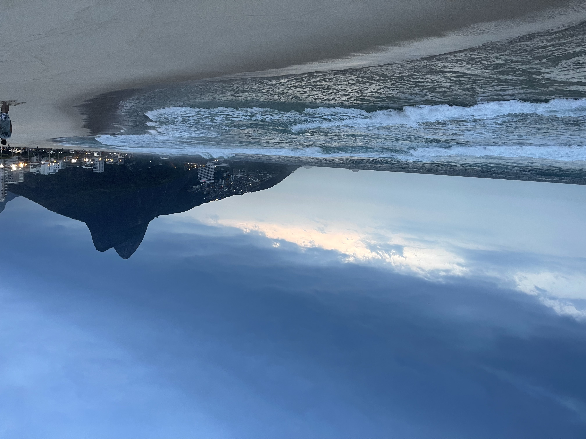

Traveling to Brazil can be a fulfilling experience for many reasons. From the diverse landscapes and vibrant culture, to the delicious food and friendly people, there is something for everyone in this South American gem.
Brazil is home to some of the most beautiful beaches in the world, such as Copacabana and Ipanema in Rio de Janeiro. It also boasts the Amazon Rainforest, the largest tropical forest in the world, which is a must-visit for nature lovers and adventure seekers. For history and culture enthusiasts, there are numerous colonial towns, such as Ouro Preto and Salvador, which offer a glimpse into Brazil's rich past.
Brazil is also famous for its lively and colorful festivals, such as Carnival, which takes place in Rio de Janeiro every year and is a spectacular display of music, dance, and costumes. The country is also known for its delicious cuisine, which features a fusion of African, Portuguese, and indigenous flavors, and is a food lover's paradise. Finally, the warm and friendly hospitality of the Brazilian people makes travelers feel welcomed and at home, further enhancing their experience.
In conclusion, traveling to Brazil is an experience that offers a wealth of opportunities for adventure, exploration, and cultural enrichment. With its diverse landscapes, vibrant culture, delicious cuisine, and friendly people, Brazil truly has something for everyone. Whether it's lounging on the white sandy beaches, exploring the Amazon Rainforest, immersing oneself in the country's rich history and culture, or indulging in its mouth-watering cuisine, Brazil is a destination that is sure to leave a lasting impression. So pack your bags, book your tickets, and get ready to embark on a journey of a lifetime to this South American gem.